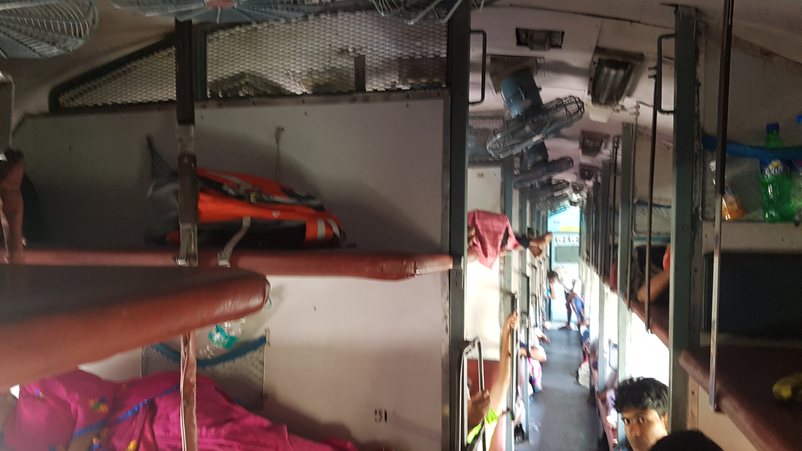
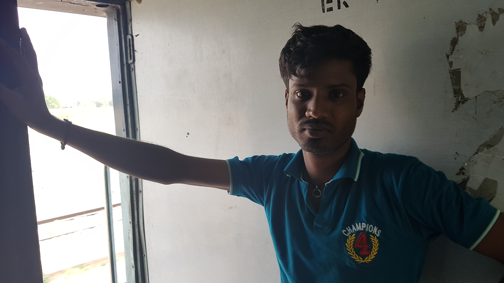

인도기차, 20시간 짜리 지옥의 찜질방
2017년 05월 06일
여행 D+33, 인도 D+4
바라나시를 떠나다
바라나시에서의 3일 짤은시간이라 아쉬웠지만 나는 과감히 떠나기로 했다. 지난 포카라에서의 경험이 한몫하기도 했다. 떠나는것은 쉬운일이 아니다. 여행을 시작 하는것도 어려운 일이지만 한 여행지를 마치고 다음 여행지로 떠나는 것도 쉬운일이 아니라는 사실을 깨달았다. 이미 익숙해진 장소를 떠난다는 것은 생각보다 큰 결심이 필요하고 용기가 필요했다. 특히 특별히 기간과 장소를 구체적으로 계획하지 않는 나같은 장기 여행자들은 더 심한것 같다. 그래서 조금만 좋은 장소를 만나면 생각 없이 몇주 몇달씩 머물게 되는것 같다. 나도 포카라에서 1달이나 소비했다. 총 9개월 여행중 1달이나 써버렸다. 거기서도 특별히 한일도 없다. 세계 3대 패러글라이딩 장소라는데 그것도 안했다. 히말라야 강에서 레프팅도 할수 있었는데 안했다. 그냥 밥이나 먹고 까페에 돌아다닌게 전부다. 한국에서도 충분히 할 수 있는 일이다. 컴포트 존에 머물렀던것 같다. 막상 떠난다는게 생각보다 큰 용기를 필요하게 했다.
이번 바라나시는 그래서 무리해서 일찍 떠나기로 한거다. 익숙한 곳을 떠나 낮선 장소에 가는일은 두렵다. 그런 느낌이 들수록 그곳에 머물지 말고 과감히 떠나자. 많은 나라에 가야함에 비해 여행 일정도 촉박한데 장기간 머물수 있을 여유가 없다. 나는 인도인들이 여름 휴가철에 찾는다는 휴양지 마날리로 간다. 마날리는 인도 북부에 위치해 있어서 시원한 장소이다.
인도기차, 20시간 짜리 지옥의 찜질방
어제 우려했던 일이 일어났다. 릭샤기사아저씨가 5시에 나타나지 않은것이다. 다행이 옴게스트하우스 주인아저씨가 일어나서 릭샤꾼에게 데려다 줬다. 400루피, 약 30분 걸려서 무가살라이 기차역에 도착했다. 역시 외국인은 안보이고 모두 나를 처다본다. 기차에서 마실 물과 과자를 구매한뒤 탐승하기로 했다. 벌써 6시가 다되가니 시간이 많지는 않다. 다시한번 기차를 어디서 타야하는지 확인했다. 이제는 적어도 기차역같은 곳에서 헤매진 않는다. 계속계속 사람들에게 물어보면서 확인하면 되기 때문이다.
그래도 기차를 어디서 타는지 찾기는 쉽지는 않았다. 전광판에 플랫폼 3이라고 써있었는데 사람들에게 물어보니 7번 플랫폼에서 타라고한다. 하마터면 잘못 탈뻔 했다. 한가지 조사하지 못하고 온것은 식사는 어떻게 하는지다. 어디서 음식을 사야하며 어디서 먹어야하나? 다행이 기차앞에서 서성이다가 음식을 파는 사람을 만나서 바로 구매했다. 기차안에서 먹어도되는지 몰라서 그냥 그자리에서 흡입하고 기차를 탔다. 정말 맛이 없었다.
 왼쪽 윗칸이 내 자리다. 오른쪽아래 나를 빤히 처다보는 넘이 20시간 내내 나를 저런식으로 처다보는데 기분 엄청 나빴다. 게다가 내가 인사를 했는데도 받아주지도 않고 저렇게 처다본다. 남자인 나도 기분이 더러운데 여성여행자들은 얼마나 불편할까.
기차를 타기전에 사람들이 조언해준대로 바닥을 물티슈로 닦았다. 처음엔 노란색 먼지만 묻어나오길 기대했지만 시커먼 묶은 때가 묻어 나왔다. 닦아도 닦아도 계속 나와서 그냥 포기하고 나중에 옷을 빨기로 했다. 몇몇 인도인들도 바닥에 넓은 천을 깔고 누워있는데 인도 기차를 SL 칸을 탈때는 그런것을 들고다니면 유용할 것 같다.
타자마자 큰 베낭을 머리쪽에 눞히고 작은베낭은 안고 누워봤다. 모가지가 높아서 굉장히 불편했다. 베낭을 바닥에 놓을수 없으니 어쩔수 없이 감수하는 수 밖에 다른 여행자들은 어떻게 타는지 팁이 있으면 알고싶다. 눞자마자 피곤이 몰려왔다. 바라나시의 마지막 밤을 4시간밖에 자지 못했다.
자다 깨다하다가 포카라에서 킨들에 넣었던 책 인포메이션을 다시 읽기 시작했다. 안나푸르나 트레킹을 마치고 첫날 인포메이션의 1장을 읽었을때 하루에 1장씩 읽기로 하면 되겠다는 생각에 기분이 좋았었는데, 그 이후부터 지금까지 한장도 안읽었다. 기차안에서는 할것도 없고 멀미가 나지도 않으니 책읽기 딱 좋은 곳이었다.
소문대로 엄청나게 더웠다. 몸의 표변이 벽이나 침대에 붙어있으면 어김없이 땀이 났다. 내가 더위에 강해서 망정이지 더위에 약한사람들은 진짜 이 계절에는 AC가 없는칸에 절대 타면 안된다. 탈수가 심하고 뜨거운 온도 때문에 문제가 일어날것 같다. 지나고 나서 계산해봣는데 20시간동안 기차 안에서 총 3.5리터의 물을 마셨지만, 소면은 2번밖에 안봤다. 그많은 양의 수분이 모두 땀으로 배출되었던것.
인도인들이 엄청나게 처다보는데 불편해 죽겠다. 불편함을 이겨내기 위해 처다보는사람들에게 인사를 시도했지만 인사도 잘 받아주지 않는다. 경계하는건지 낫선 외모가 신기했던건지 얼굴에 미소를 띄운채로 처다보면 모르겠는데 진짜 빤히 쳐다본다. 그러다가 스벤두를 만났다. 이친구는 다른사람과는 다르게 친절했다. 나랑 대화하기를 무척 원하는것 같았다.
 스벤두와 화장실 앞에서 이런저런 대화를 했다. 둘다 영어를 잘 못했지만 그럭저럭 대화가 되었음.
또한명의 영어를 할 수 인도인을 만났다. 그 친구 이름은 샨이고 영어를 꽤 잘했다. 내가 인터넷이 안되고 GPS도 안먹혀서 현재 위치를 알고싶다고 물어봤는데 친절해게도 본인 스마트폰으로 현재 기차 위치랑 지도상의 위치를 보여줬다. 아직도 가려면 멀었다.
정말 미친듯이 덥다. 이렇게 오랫동안 더운장소에 오래있기는 처음이다. 찜질방에 20시간동안 있는것 같은 느낌이다. 맨 꼭데기층은 앉아있기도 불편하고 가방이 커서 누워있기도 불편하다. 계속 책을 읽으며 자다 깨다 했다. 더우니 훨씬 늘어지고 피로해지는것 같다.
저녁시간이 다 되어 스벤두 덕분에 아랫층에 있는 현지인들과 대화활 수 있게 되었다. 처음에 계속 처다보기만 했던 그들도 나에게 호기심을 가지고 이것저것 묻기 시작했다. 내가 몇가지 힌디어를 가르쳐달라고 했더니 좋아했다. 배운말은 "투마라남 지훈" (내 이름은 지훈입니다) 투마라남까?"(당신 이름은 무엇입니까?) 아마라남 (나 소유격 표현) Dost (친구) 몇가지 배우고 따라하고 있으니 주변에 있던 인도인들이 흥미로워 보였는지 몰려서 다 쳐다본다.
한 두시간동안 아래층에 앉아서 현지인들과 이야기도 하고 그냥 책도 보기도 했다. 저녁도 그 자리에서 먹었다. 쓰레기가 생겨서 다음역에서 버릴생각으로 자리 밑에 놔뒀더니 주변 사람들이 그냥 밖에 내다 버리라고 한다. 이게 인도의 독특한 문화?다. 인도인들은 쓰레기는 쓰레기통에 버려야한다는 관념 자체가 없는것 같았다. 그냥 아무데나 버리는데 살짝 문화 충격을 받았다.
그 사람들에게 너네 인도 자연은 무척 아름답다. 나는 너희 자연을 보호하기 위해 밖에다 쓰레기를 버리지 않고 다음역에서 버릴것이다 라고 약간의 구라를 보태 말했더니, 거기있던 한 노인이 무척 감명을 받은듯 했다. 나보고 좋은 사람이라고 하면서 고맙다고까지 말했다. 선의의 구라를 적절히 이용한 예인것 같다.
곧 자연스럽게 취침시간이 되었고 자리에 가서 누웠다. 20시간 내내 계속 피곤했다. 자고싶었으면 계속 누워서 잘 수 있었을것 같다. 새벽 3시에 도착예정인데 약간 연착되지 않았을까? 알람을 4시즘 맞추려다가 혹시나 싶어 3시로 변경했다. 한건 없지만 정말 긴긴 하루였다.